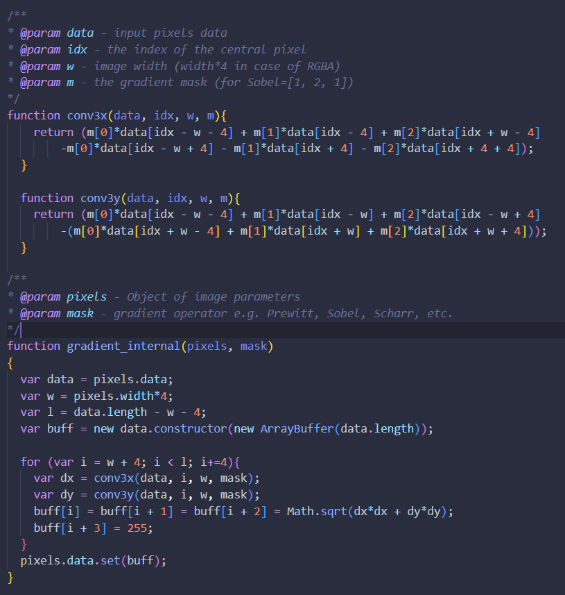
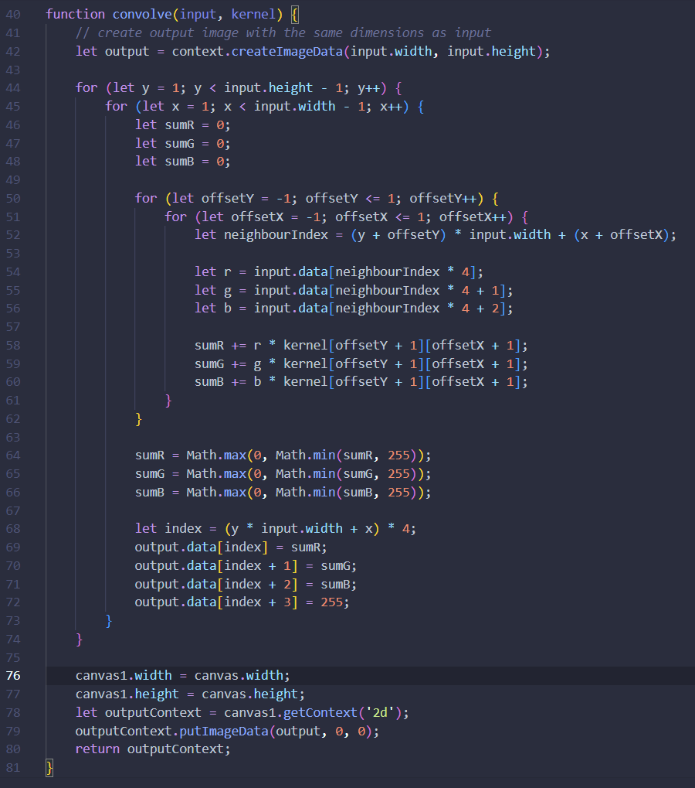
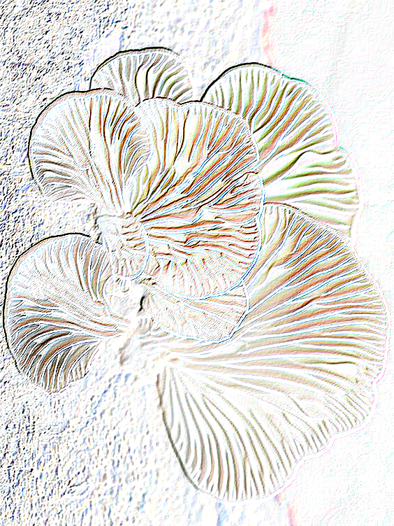
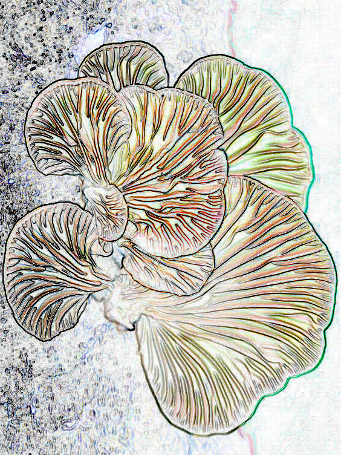
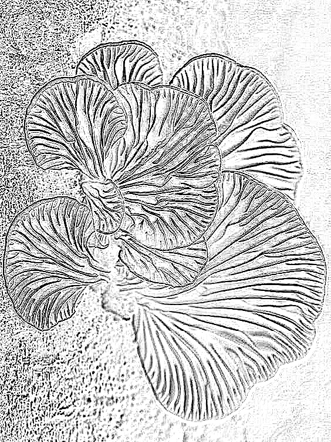
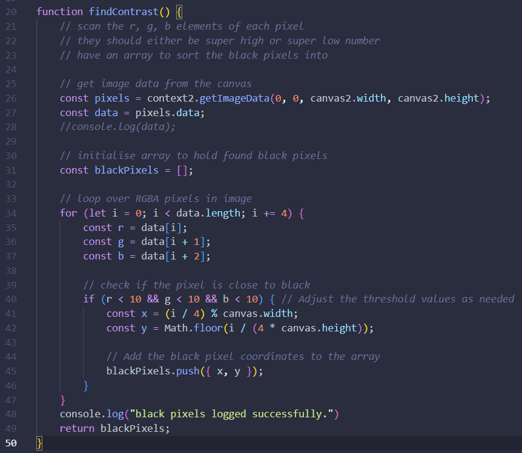
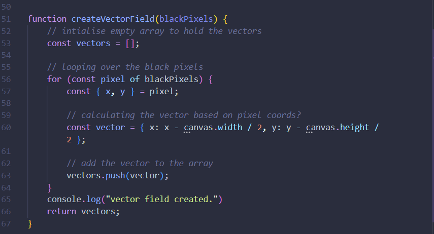

For this idea I was imagining something that worked like a lake with hidden undercurrents. Particles move idly around in calm waters but move at different velocities when taken by a current. In this test the mushroom's body is the lake and the patterned lines are the undercurrents.
The plan is to:
Then process the data in such a way to "light up" said particles at different intervals around the field.
I got this code from here but couldn't get it to draw an image. This led me to repurposing code that I had already used in my sound and image processing module, shown below is its respective output.
After creating a program that processes pixels to find the edges in an image, I realised doing it with code was unnecessary. The pixels only matter once the image is turned into this black and white contrast. Then I use the pixels in the contrasted image to create the vector field. There may be information within the convolve function that I could use in the next steps but I think there was a faster way for me to achieve the same results. Still I took away a lot about image processing from this exercise.
  I converted the image to it's edges with an online editor, which only took a few minutes to use. They use the Roberts cross, Sobel-Feldman, and Laplacian processes in order. I can crop these images to just the mushroom and not the tree bark, and make a program that only generates vectors at the black lines seen in the images. I'm going to use the Laplacian output because of the lack of other colours, I think this will make it easier to process.
In this function I'm scanning each pixel from the Laplacian output image. By checking wether the value is below a certain threshold (in this instance I decided 10 was low enough) I can determine wether the pixel is black. This is because RGBA values range from 0-255, 0 representing blackness. Then I added the pixel to an array. I can then use this array as a kind of map for my vector field.
I take in the blackPixels array as a parameter for the next function. The x,y points of the vector are based on each blackPixel but I don't think they are situated within the context of the entire canvas. When I log the output, I know it is creating an array of length 48000. Creating a visual output would help me better understand this code. I could do this by "dropping" particles onto the vector field to add colour.